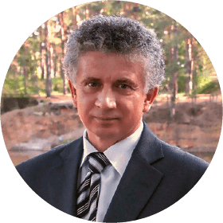

IX Всероссийская научно-практическая
конференция по проблемам изучения и преподавания
русского языка в России на современном этапе
конференция по проблемам изучения и преподавания
русского языка в России на современном этапе
Методика обучения русскому
языку в контексте ФГОС
25 - 26 ноября 2021 года
Дистанционный формат
Ведущий конференции:
И. П. Цыбулько,
ведущий научный
сотрудник ФГНУ «ФИПИ»,
к. п. н.
сотрудник ФГНУ «ФИПИ»,
к. п. н.
Программа реализуется совместно с Издательством «Национальное образование»
В рамках конференции планируется освещение следующих вопросов:
Реализация единых подходов к формированию и оцениванию основных видов речевой деятельности
1
2
Изменения в государственной итоговой аттестации по русскому языку в контексте единых подходов к формированию и развитию основных видов речевой деятельности
Основные направления совершенствования государственной итоговой аттестации по русскому языку
3
4
Школьный контроль на современном этапе / специфика и интерпретация результатов
Тематический контроль по русскому языку / научно-методические подходы к созданию контрольных измерительных материалов для тематического контроля
5
6
Подходы к измерению динамики обученности по предмету
Соотношение традиций и инновационных подходов в методике преподавания русского языка
7
CПИКЕРЫ, принимающие участие в конференции:

Цыбулько И. П.
Ведущий научный сотрудник ФГБНУ «ФИПИ», руководитель комиссии разработчиков КИМ для проведения ГИА по образовательным программам основного общего и среднего общего образования по русскому языку
Тишина Н. И.
Руководитель Центра дополнительного образования Федерального государственного бюджетного образовательного учреждения высшего образования «Государственный институт русского языка им. А. С. Пушкина»
Арутюнова Е. В.
Старший научный сотрудник Института русского языка им. В. В. Виноградова РАН, кандидат филологических наук, зам. главного редактора портала «Грамота.ру», член Орфографической комиссии РАН
Федорова Н. А.
Кандидат филологических наук, руководитель модуля Creative technologies, Университет ИТМО
Крайник O. М.
Начальник Учебно-методического управления ФГБОУ ВО «Алтайский государственный университет», член комиссии по разработке КИМ для ГИА по русскому языку

Александров В. Н.
Учитель русского языка и литературы муниципального общеобразовательного учреждения «Рощинская средняя общеобразовательная школа», кандидат педагогических наук
Иванов С. Л.
Заведующий кафедрой, учитель русского языка общеобразовательной автономной некоммерческой организации «Школа «Летово», кандидат педагогических наук